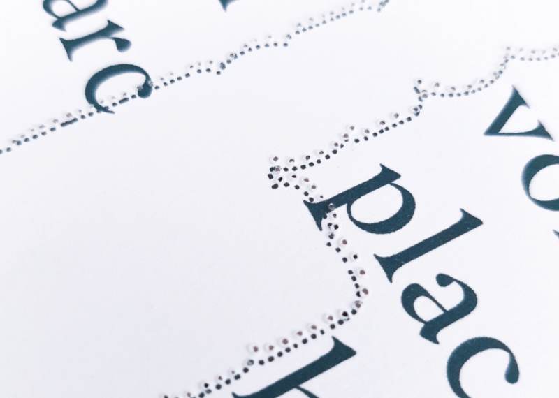

Médiarchéologie, Editorial Design
Master's project, 2019.
39,5 × 25 cm, 20 pages.
"Whereas Media History looks at the succession of "new medias" replacing former ones, Media Archaeology instead digs into deeper layers where novelties, hidden in the former can emerge, as well as underground presences of the former in the new. In addition to being interested in the oddities, the curiosities, and the failures crushed by the triumphalist tales of technical progress, Media Archaeology stubbornly questions the materiality of devices that, for thousands of years, have enabled us to record, transmit and process the sensitive and informational data offered to us."*— Jussi Parikka
Médiarchéologie is a cabinet of software curiosities that pays tribute to forgotten programs. This first issue focuses on visual programming languages and their history. It includes On Line Graphics (Sutherland, 1966), PLAY (Runyan, Tanimoto, 1985), Puzzle Program (Goguen, 1985), Blox (Glinert, 1986), Visulan (Yamamoto, 1996), Drape (Overmarks, 1998).
* Personal translation.